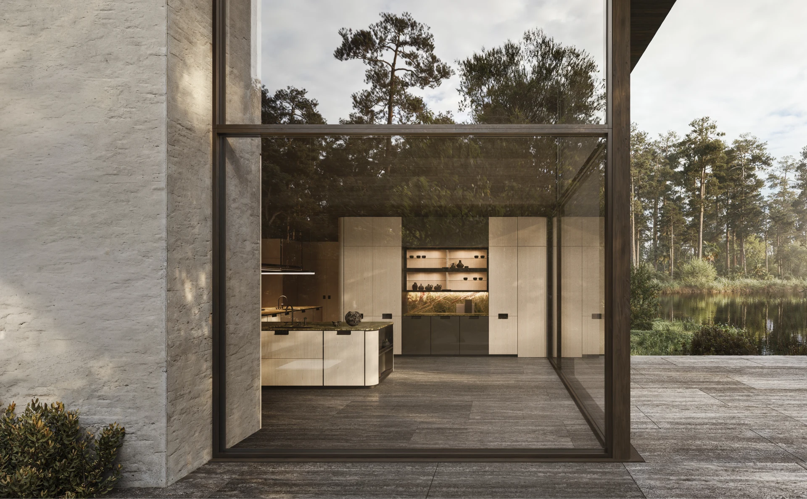

Кухни Molteni&C в России
Компания HOMEART — официальный дилер Molteni&C (Молтени) в России — элитные кухни премиум-класса из Италии. Коллекции воплощают Dada Engineering: инновационные решения, безупречное мастерство и авторский дизайн, выражающие превосходство итальянского производства.


Инновации, мастерство и итальянский дизайн
Molteni&C — одна из ведущих итальянских мебельных мануфактур, объединяющая наследие семейного бизнеса с работой лучших дизайнеров современности: Vincent Van Duysen, Ferruccio Laviani, Yabu Pushelberg. Кухонные коллекции бренда сочетают точную архитектуру, натуральные материалы и безупречное качество исполнения.
Мы — официальный дилер Molteni&C в России: консультации, подбор конфигураций и материалов, сопровождение проекта от эскиза до установки.

Частые вопросы
Вы официальный дилер Molteni&C в России?
Да, компания HOMEART официальный дилер Molteni&C (Молтени) в России. Консультируем по выбору коллекции, подбираем конфигурацию и материалы под интерьер, сопровождаем проект от эскиза до установки.
Сколько стоит кухня Molteni?
Кухни Molteni&C — мебель класса люкс, изготавливаемая под конкретный проект: конфигурация, материалы отделки и комплектация у каждого заказа свои. Точную стоимость рассчитываем индивидуально после консультации — оставьте заявку, и мы подготовим расчёт под ваш интерьер.
Из каких материалов делают кухни Molteni?
В зависимости от коллекции — натуральный камень цельной плитой, шпон ценных пород дерева, лакированные и матовые поверхности, металлические профили. Например, Physis выполняется из массива камня со шпоном дерева, а материалы других коллекций отличаются.
Кто разрабатывает дизайн кухонь Molteni&C?
Большинство кухонных коллекций созданы Vincent Van Duysen, креативным директором Molteni&C с 2016 года. Также в линейке — коллекции Ferruccio Laviani (Hi-Line 6) и дизайн-студии Yabu Pushelberg (Tivalì 2.0).
Сколько коллекций кухонь у Molteni&C?
На данный момент 8 коллекций: Physis, VVD, Intersection, Ratio, Prime, Hi-Line 6, Tivalì 2.0 и Helios (единственная уличная кухня в линейке, для террасы или сада).
Есть ли шоурум Molteni в Москве?
Да, шоурум HOMEART находится в Москве по адресу ул. 3-я Фрунзенская, 1. Часы работы: Пн–Пт 10:00–19:00, Сб 12:00–18:00. Приезжайте посмотреть материалы и конфигурации вживую или запишитесь на визит через форму на сайте.
Обсудить проект кухни
Оставьте контакты — подберём коллекцию и конфигурацию под ваш интерьер.